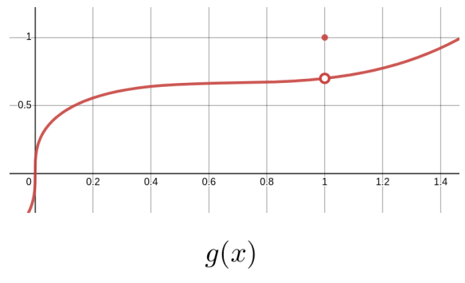
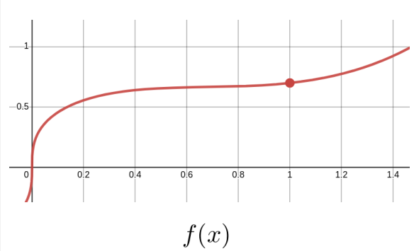
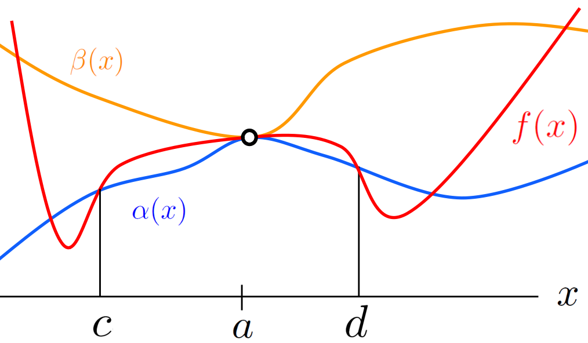
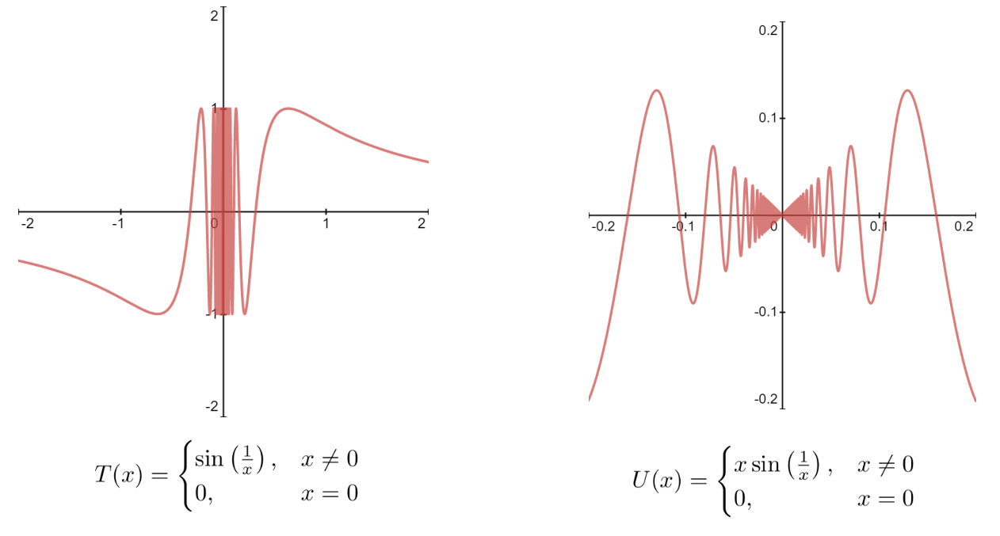

Subsection14.1.1The Limit of a Composition and Continuity at a Point
In the old days when people invented a new function they had something useful in mind. Now, they invent them deliberately just to invalidate our ancestors reasoning, and that is all they are ever going to get out of them.
In this section we will state several theorems about limits which we will need in the sections following. The limit concept is very subtle and our understanding of it is still quite intuitive. We are not yet quite prepared to prove these theorems so we will leave these theorems unproven for now. Our immediate goal is simply to understand what they say and learn how to use them. In the next section we will begin using these theorems to show how the limit in Definition13.4 allows us to recapture all of the major results we used in Part I of this text.
In Chapter17 we will finally discard our intuitive definition of a limit (Definition12.2) and formally define both a limit at infinity (Definition17.20 and Definition17.14) and a limit at a point (Definition17.40). Then we will return to the theorems in this section and (finally) prove rigorously that they are, in fact, true. Until then any result which relies on the theorems in this section should be considered contingent.
In Chapter12 we stated the following three theorems about limits at infinity.
the limit of a sum is the sum of the limits (Theorem12.7),
the limit of a product is the product of the limits (Theorem12.8) and,
the limit of a quotient is the quotient of the limits (Theorem12.9).
All three of these theorems remain true if \(x\) is approaching some finite number, \(a\text{,}\) instead of infinity.
Theorem14.1.The Limit of a Sum is the Sum of the Limits.
Let \(a\) be some real number. Suppose that the functions \(f(x)\) and \(g(x)\) are defined on some open interval about \(a\) except, possibly, at \(a\) itself. Then if \(\limit{x}{a}{f(x)}=L\) and \(\limit{x}{a}{g(x)}=M,\) then
Theorem14.2.The Limit of a Product is the Product of the Limits.
Let \(a\) be some real number. Suppose that the functions \(f(x)\) and \(g(x)\) are defined on some open interval about \(a\) except, possibly, at \(a\) itself. If \(\limit{x}{a} {f(x)}=L\) and \(\limit{x}{a}{g(x)}=M\) then
\begin{equation*}
\limit{x}{a} {\left(f(x)\cdot g(x)\right)}=\left(\limit{x}{a}{f(x)}\right)\cdot\left(\limit{x}{a}{g(x)}\right)
= L\cdot M.
\end{equation*}
Theorem14.3.The Limit of a Quotient is the Quotient of the Limits.
Let \(a\) be some real number. Suppose that the functions \(f(x)\) and \(g(x)\) are defined on some open interval about \(a\) except, possibly, at \(a\) itself. Then if \(\limit{x}{a} {f(x)}=L\) and \(\limit{x}{a}{g(x)}=M\neq0\) then
Notice that in addition to changing \(\infty\) to some real number, \(a\text{,}\) we have added two qualifications to the statement of each of these theorems from Chapter12:
Suppose that the functions \(f(x)\) and \(g(x)\) are defined on some open interval about \(a\) and,
except, possibly, at \(a\) itself
To see why these are necessary recall that were going to use limits to define the derivative as in Definition13.4 so well need to evaluate the limit \(f^\prime(x)=\tlimit{h}{0}{\frac{f(x+h)-f(x)}{h}}\text{.}\) Clearly the expression \(\frac{f(x+h)-f(x)}{h}\) is not defined at \(h=0\text{.}\) But were only interested in its value in the limit as \(h\rightarrow0\) which means that \(h\) must be able to get close to \(0\text{.}\) That is, there must be an open interval around \(0\) where the expression \(\frac{f(x+h)-f(x)}{h}\) is defined.
But we dont care if \(\frac{f(x+h)-f(x)}{h}\) is defined at \(h=0\) or not. That is irrelevant to our purpose. So we state explicitly that we do not consider whether \(h=0\text{.}\)
Ok, but why did we insert the word possibly? Wouldnt it be enough to simply say except at \(a\)?
We need to say possibly because these theorems, like all theorems, are stated with as much generality as possible. For example, consider the function \(f(x)=2x\text{.}\) Had we not included possibly in the conditions of our theorems the limit: \(\tlimit{x}{3}{2x}\text{,}\) which is clearly equal to \(6\text{,}\) would have to be considered undefined because \(f(x)=2x\) is defined at \(x=3\text{.}\) This distinction may seem like a very fussy, and unimportant detail right now, but it will be important when we discuss the meaning of continuity in Subsection14.1.1.
In particular the limit is not \(10\text{.}\) Here is how we would evaluate this limit using the tools we currently have at our disposal. Were interested in the limit as \(x\rightarrow2\) so in particular we do not need to consider the case when \(x=2\text{.}\) But as long as \(x\neq2\) we have \(f(x)=3x\) so
Notice that our reasoning is a little vague in the last step because we had to resort to the phase gets close to, and we know from our work in Section12.4 that this is not a precise phrase. This is the best we can do now because we have not yet rigorously defined a limit. We will do that in Chapter17.
Problem14.5.
By reasoning in a manner similar to Example14.4 show that \(\tlimit{x}{3}{f(x)}=9\) for each function.
It will be tedious to write (and to read) the phrase Suppose that \(f(x)\) is defined on some open interval about \(a\) except, possibly, at \(a\) itself every time we need it so it is customary to say something more like Suppose \(f(x)\) is defined near \(a\) instead. Because we are trying to be as precise, and rigorous as possible we will formalize this by redefining the word near.
Definition14.6.Near.
We say that \(f(x)\) has some property near \(x=a\) if \(f(x)\) has that property on an open interval about \(x=a\text{,}\) except possibly at \(a\) itself.
Notice that this is not what near means in ordinary speech. This is one of the things that makes it difficult to read mathematics. We routinely co-opt words from natural languages (like English) and redefine them to fit our needs. In this case our purpose requires that we change the definition of near slightly as youve seen. Because near is a common word and you have a lifetime of experience using it, it can be very difficult to cast off your preconceptions. The familiar definition you learned in childhood will intrude and cause confusion. It is hard to overcome this. Refer back to the definition frequently until you have internalized the mathematical definition.
We have the following theorem.
Theorem14.7.The Limit of a Constant is the Constant.
Suppose \(a\) and \(L\) are real numbers, and \(f(x)=L\) near \(a\text{.}\) Then
Notice that Theorem14.7 would be considerably less useful had we not required that \(f(x)=L\) for \(x\) near \(a\text{,}\) rather than \(f(x)=L\) on its entire domain. For example, as stated Theorem14.7 allows us to conclude that if
\begin{equation*}
H(x) =
\begin{cases}
1\amp \text{ if } x\ge0\\
-1\amp \text{ if } x\lt0
\end{cases}
\end{equation*}
does exist. Explain why this does not contradict Theorem14.1.
Problem14.12.
Suppose \(g(x)\neq0\) near \(x=a\) and \(\tlimit{x}{a}{\frac{f(x)}{g(x)}}\) exists. Use Theorem14.2 to show that if \(\limit{x}{a}{g(x)}=0\) then \(\limit{x}{a}{f(x)}=0\text{.}\)
Hint.
Consider \(f(x)=\frac{f(x)}{g(x)}\cdot g(x)\) for \(x\) near \(a\text{.}\)
The following Corollary says that if \(f(x)\) is approaching \(L_f\) and we multiply \(f(x)\) by a number, \(k\text{,}\) then the product \(kf(x)\) approaches \(kL_f\text{.}\) It follows from Theorem14.7 and Theorem14.2.
Corollary14.13.
If \(\limit{x}{a}{f(x)}=L_f\) and \(k\) is a real number then
The concept of continuity is essential to Calculus, but you may have noticed that we have carefully avoided it as much as possible until now. This is because defining continuity is similar to defining the line tangent to a curve (Definition5.9). We need to think carefully about what we want the term continuous to mean, and then craft our definition to capture that meaning. This would have been very difficult to do without a fairly sophisticated understanding of the limit concept.
So stop and think about this for a moment. What do we mean when we say a curve is continuous? A first, intuitive definition usually goes something like this: A function is continuous if you can draw its graph without lifting your pencil from the paper, but this is unsatisfactory for a number of reasons. In particular, it is impossible to apply in most cases. Think about it. How often have you seen the entire graph of any function? Usually we just draw the part neat the origin and put arrowheads on both ends of the graph. We need something more precise.
At the end of Example12.66 we remarked that it is only when \(f(x)\) is continuous at \(x=g(a)\) that \(\textcolor{blue}{\tlimit{x}{a}{\textcolor{red}{f(g(x))}}}\) is equal to \(\textcolor{red}{f}\textcolor{blue}{\left(\tlimit{x}{a}{g(x)}\right)}\text{,}\) but we did not discuss the matter any further. It is time for that discussion.
First, notice that when you think closely about the statement \(f(x)\) is continuous at \(g(a)\) it appears to be nonsense, because \(g(a)\) is the value of \(f\) at the single value \(g(a)\text{.}\) Does it make sense to you that a curve can be continuous at a single value of its domain? In ordinary usage the concept of continuity requires an interval to be continuous on, doesnt it?
Since we need the concept of continuity at a point, we define it.
Definition14.15.Continuity at a Point.
A function \(f\text{,}\) whose domain is an interval in \(\RR\text{,}\) is continuous at \(x=a\) in the interval, if and only if \(\limit{x}{a}{f(x)}=f(a)\text{,}\) (alternatively, if \(\limit{h}{0}{f(a+h)}=f(a)\)).
If \(f\) is continuous at every point in its domain well just call it a continuous function.
The sketch below shows that Definition14.15 recovers the intuitive notion that a function is continuous if we can draw its graph without lifting pen from page. Both of the functions, \(f(x)\) and \(g(x)\) are identical everywhere except at \(x=1\text{.}\) Clearly, we must lift our pen from the page to draw the graph of \(g(x)\text{,}\) which is discontinuous at \(x=1\text{.}\) But this is not true of the graph of \(f(x)\text{,}\) which is continuous.


So intuitively, the continuity of \(f(x)\) at \(a\) means that as \(x\) approaches \(a\text{,}\)\(f(x)\) should approach \(f(a)\text{.}\) For \(g(x)\) in the sketch above this does not happen when \(a=1\text{.}\) From Definition14.15 it is clear that if \(f(x)\) is continuous at \(a\) then
This may seem to be a little silly observation but it emphaizes the fact that the continuity of \(f(x)\) at \(a\) amounts to saying that we can interchange the name of the function and the limit symbol. This is the essence of Theorem14.16 below.
Theorem14.16.The Limit of a Composition is the Composition of the Limits.
Suppose \(\limit{x}{a}{g(x)}=L_g\) and that \(f(x)\) is continuous at \(L_g\text{.}\) Then
When we were studying horizontal asymptotes in Section12.2 we encountered Theorem12.29 (the Squeeze Theorem at Infinity). But the Squeeze Theorem is also valid if \(x\rightarrow a\text{,}\) where \(a\) is a real number.
Theorem14.19.The Squeeze Theorem (The Finite Case).
If \(\alpha(x)\le f(x)\le \beta(x)\) for \(x\) near \(a\) and
\begin{equation*}
\limit{x}{a}{\beta(x)} = \limit{x}{a}{\alpha(x)} = L
\end{equation*}
then \(\limit{x}{a}{f(x)} = L\) also.
Theorem14.19 is illustrated below, but a formal proof will not be given until Chapter17. Notice that on the interval \((c,d)\)\(f(x)\) is caught between (squeezed by) \(\alpha{(x)}\) and \(\beta{(x)}\text{.}\)

Problem14.20.
Consider the two functions defined in the sketch below:

(a)
Use Theorem14.19 to show that \(U(x)\) is continuous at \(x=0\text{.}\)
Hint.
What functions is \(U(x)\) caught between?
(b)
Use Definition14.15 to show that \(T(x)\) is not continuous at \(x=0\text{.}\)
Hint.
Try the substitution \(z=\frac1x\) for \(x\neq0\text{.}\) What would \(\limit{x}{0}{T(x)}\) look like in terms of \(z\text{?}\)
Section14.2The General Differentiation Theorems, via Limits
. . . one way in math to take care of destabilizing problems is to legislate them out of existence . . . by loading theorems with stipulations and exclusions designed to head off crazy results.
Since we will now be proving the the differentiation rules rigorously we will call them what they really are: Theorems. Because limits are much less intuitive than differentials well want to be as efficient as possible when using them. The sooner we can build up some tools to make things easier, the better.
Also, in this section we will add a new differentiation rule (theorem): The Chain Rule. Or rather, we will give a name to an already familiar technique and elevate its status by providing a formal proof. Proving the Chain, Product, and Quotient Differentiation Rules using limits will require a good deal of cleverness. These proofs will also uncover some unexpected subtleties along the way.
Before we begin there is one more point that needs to be clear. Because differentiation is now defined via a limit and limits are defined at a point we can only differentiate a function at a point. We usually say that limit evaluation and differentiability are local properties. If we dont specify the at \(x\) the convention is that the function is differentiable at every point in its domain.
The proof of the Constant Rule is possibly the simplest proof involving limits in existence. We provide the proof below in order To display the formalism of a proof using limits. You should use it as a guide for the exercises that follow it.
Theorem14.21.The Constant Rule for Differentiation.
If \(L\) is some number and \(f(x)=L\) for all real values of \(x\) near (on an open interval around) \(L\text{,}\) then \(f^\prime(x)=0\) at every real number \(x\) near (on the same open interval) \(L\text{.}\)
The proofs of the Sum, and Constant Multiple Differentiation Rules are all completely straightforward so we will leave them as exercises for you.
Theorem14.22.The Sum Rule for Differentiation.
If \(\alpha(x)\) and \(\beta(x)\) are differentiable at \(x\) and \(f(x)=\alpha(x)+\beta(x)\text{,}\) then \(f(x)\) is also differentiable at \(x\) and
Use Definition13.4 to prove the Sum Rule for Differentiation.
Recall that when we first established the General Differentiation Rules using differentials in Chapter4 we said that the Constant Multiple, Power and Quotient Rules for differentiation were just conveniences because they depend on the other rules. This is still true of course, which means that we dont have to prove any of them using limits. However is is straightforward to prove the Constant Multiple Rule directly from the limit definition of a derivative.
Theorem14.24.The Constant Multiple Rule for Differentiation.
If \(f(x)\) is differentiable at \(x\) and \(K\) is a constant then \(\alpha(x)=Kf(x) \) is also differentiable and
Use the Definition13.4 to prove the Constant Multiple Rule.
Section14.3The Chain Rule
To understand the Chain Rule we will need to slightly blur the distinction between function and variable.
Example14.26.
Heres what we mean: The formula \(y=(2x^2-6x)^3\text{,}\) is given entirely in terms of the variables \(x\text{,}\) and \(y\text{.}\) To differentiate using differentials we would make the (variable) substitution \(z=3x^2+6x\) so that \(y=z^3\text{.}\) In that case, \(\dx{y}=3z\dx{z}=3\left(3x^2+6x\right)^2(6x+6)\dx{x}\text{,}\) and dividing through by \(\dx{x}\) gives us the derivative of \(y\) with respect to \(x\text{,}\)
But Definition13.4 requires that we think about functions, not variables so lets translate this problem into the language of functions. If \(y=\left(2x^2-6x\right)^3\text{,}\) clearly \(y\) is a function of (depends on) \(x\text{.}\) Naming that function \(f\text{,}\) we have \(y=f(x)\text{.}\) Replacing \(y\) with \(f(x)\text{,}\) we get \(f(x)=(2x^2-6x)^3\text{.}\)
Similarly, if \(z=3x^2+6x\) then \(z\) is also a function of (depends on) \(x\text{,}\) and naming that function \(\beta\) we have \(z=\beta(x)\text{.}\) Replacing \(z\) with \(\beta(x)\) we have \(f(x)=(\beta(x))^3\text{.}\) If we suppress the \((x)\) part of \(\beta(x)\text{,}\) we see that
This is the Chain Rule. We have expressed the Chain Rule in this form so that we can prove it rigorously, not so that we can use it. The substitution process using differentials still works so there is no reason to stop using substitution when you are actually computing derivatives.
Theorem14.27.The Chain Rule.
Suppose that \(\beta(x)\) is differentiable at \(x\text{,}\) that \(\alpha(x)\) is differentiable at \(\beta(x)\) and that \(\Delta\beta\neq0\) near \(x\text{.}\) Then the composition,
Before the invention of Calculus, arithmetic primers gave the name The Chain Rule to the computational technique that is used to, among other things, convert money from one currency to another. For example if we need to convert \(30\) American dollars ($) to British pounds () but we only know their values ie euros (). Specifically we know that
\begin{align*}
1 \text{ dollar} = 0.86\text{ euros,} \amp{}\amp{}\text{ and that }
\amp{}\amp{} 1\text{ euro} = 0.9 \text{ pounds.}
\end{align*}
A similar chain of cancellations will occur when we differentiate a function composition of the form \(\alpha(t)=\alpha(\beta(y(x(t))))\text{.}\) We think of
\begin{gather*}
\alpha \text{ as a function of }\beta \left(\text{ so that }
\alpha^\prime(\beta)=\dfdx{\alpha}{\beta}\right)\\
\beta \text{ as a function of }y \left(\text{ so that
}\beta^\prime(y)=\dfdx{\beta}{y}\right)\\
y \text{ as a function of }x \left(\text{so that}
y^\prime(x)=\dfdx{y}{x}\right),\\
\end{gather*}
and
\begin{gather*}
x \text{ as a function of }t \left(\text{so that }
y^\prime(x)=\dfdx{x}{t}\right).
\end{gather*}
The substitution we used to make things easier on your eyes in Section2.2 is equivalent this chain of cancellations. With the invention of Calculus the older Chain Rule for unit conversion was extended to the differentiation by substitution technique using differentials. Eventually the older usage was dropped and this became the only Chain Rule. When the limit was used to provide rigor to Calculus the name was also applied to equation(14.2)).
END OF DIGRESSION
Understanding the Chain Rule in this form requires that we blur the distinction between function and variable a bit. When we compute \(\dfdx{\alpha}{\beta}=\alpha^\prime(\beta)\) (the derivative of \(\alpha\) with with respect to \(\beta\)) we view \(\beta\) as a variable, but when we compute \(\dfdx{\beta}{x}=\beta^\prime(x)\) (the derivative of \(\beta\) with respect to \(x\)) we view it as a function.
As far as the Chain Rule is concerned it is both.
Proof.
Before we begin take specific notice of the assumption \(\Delta\beta\neq0\) near \(x\) in the statement of the Chain Rule. We will have a few comments about this in Digression: Why Assume That \(\Delta\beta\neq0\) Near Zero? after the proof is completed.
In equation(14.6)\(\beta\) is first used as a variable in \(\alpha^\prime(\beta)\text{,}\) and then as the function \(\beta(x)\text{.}\) While this is correct, it is also poor form because it accentuates the dual use of \(\beta\text{.}\) To avoid this we usually express the Chain Rule as
to emphasize that \(x\text{,}\) not \(\beta\text{,}\) is the variable.
DIGRESSION: Why Assume That \(\Delta\beta\neq0\) Near Zero?
Do you see why we had to assume that \(\Delta\beta\neq0\) near \(x\text{?}\)
Observe that in equation(14.5)\(\Delta\beta\) plays the same role the \(h\) plays in Definition13.4. In Definition13.4 we were careful to insist that \(h\) could never equal zero,so if we are going to interpret
as the derivative of \(\alpha\) with respect to \(\beta\text{,}\) as we did in equation(14.5), we need to know that \(\Delta\beta\neq0\) when \(h\) is near zero.
Our imposition of that constraint means that Theorem14.27 does not apply to any function \(f(x)=\alpha(\beta(x))\) where \(\Delta\beta\) might be equal to zero no matter how close \(h\) is to zero. Fortunately, functions of that sort are generally the kinds of pathological functions that Poincar is complained about in the quote at the beginning of this chapter. A valid proof of the Chain Rule without that constraint is possible, but since it would have very little relevance to anything well be doing we have chosen to prove only this weaker form of the Chain Rule
If you are unsatisfied with this proof and want to see a proof of the stronger version of the Chain Rule, consider majoring in mathematics. Youll see that and much, much more. In the meantime try working through the following problem.
Problem14.28.
(a)
Show that the function \(\beta(x)=\sin\left(\frac1x\right)\) does not satisfy the constraint \(\Delta\beta\neq0\) when \(x\) is near zero.
As a result of part14.28.aTheorem14.27 does not apply to any of the following functions at \(x=0\text{.}\) Nevertheless one of them is differentiable at \(x=0\text{.}\) Use Definition13.4 to find out which one.
Suppose that \(f(x)=\left(\sin(x)+\cos(x)\right)^2\text{.}\) To use the Chain Rule to compute the derivative of \(f(x)\) we need to recognize that \(f(x)\) is the composition of \(\alpha(x)=x^2\text{,}\) and \(\beta(x)=\sin(x)+\cos(x)\) and then apply Theorem14.27 as follows.
In our opinion the Chain Rule leaves a lot to be desired as a computational technique. But we dont have to use it that way since Theorem14.27 validates the substitutions we have always used.
Drill14.30.
Suppose \(y=f(x)=\left(\sin(x)+\cos(x)\right)^2\text{.}\) Compute the differential \(\dx{y}\) and then divide through by \(\dx{x}\) to find the derivative \(\dfdx{y}{x}\text{.}\) Confirm that it is the same as the derivative we found in Example14.29.
Problem14.31.
Compute \(\dfdx{y}{x}\) for each of the following functions by identifying \(\alpha(x)\) and \(\beta(x)\) such that \(y(x) = \alpha(\beta(x))\) and applying the Chain Rule. You may have to do this more than once for a given problem. In each case confirm that your computation is correct with an appropriate differential substitution.
(a)
\(y=(3x+5)^6\)
(b)
\(y=\sec(\tan(x))\)
(c)
\(y=\sqrt[7]{\frac{1}{x} +x^3}\)
(d)
\(y=\left(\frac{x-x^{\frac12}}{x^3-1}\right)^2\)
(e)
\(y=e^{x-\cos^2(x)}+(2x^2-3)^{\frac15}\)
(f)
\(y=\sqrt{x+\sqrt[3]{2+\sqrt[4]{3-x^2}}}\)
Section14.4The Product Rule
A rigorous proof of the Product Rule is also fairly complex, but it does not suffer from the kind of technical problems we encountered in the proof of the Chain Rule.
Theorem14.32.The Product Rule for Differentiation.
If \(\alpha(x)\) and \(\beta(x)\) are differentiable at \(x\) then \(f(x)=\alpha(x)\cdot\beta(x)\) is differentiable and
It appears then that our goal is simply to reorganize equation(14.8) until it looks like equation(14.9). We say simply but it will only appear to be simple after we have succeeded. We will proceed slowly.
Observe that if we subtract \(\alpha(x+h)\beta(x)\) from the blue part of the numerator in equation(14.8) we get
This suggests that we should both add and subtract the expression \(\alpha(x+h)\beta(x)\) to the numerator of equation(14.8). Doing this and factoring as weve indicated above we get
Section14.5The Other General Differentiation Rules
Theorem14.33.The Quotient Rule for Differentiation.
We assume that \(\alpha(x)\text{,}\)\(\beta(x)\text{,}\) and \(f(x)=\frac{\alpha(x)}{\beta(x)}\) are all differentiable functions Assume further that \(\beta(x)\neq0\text{.}\) Then
Proving this directly by using limits would be unpleasant, but as we observed in Chapter4 the Quotient Rule can be viewed as a rearranged version of the Product Rule.
Problem14.34.
Use the Product Rule to derive the Quotient Rule.
Hint.
First solve \(f(x)=\frac{\alpha(x)}{\beta(x)}\) for \(\alpha(x)\text{.}\)
With the Product Rule for Differentiation in place we now have the tools needed to prove the Power Rule for Positive Integer Exponents. The method of proof we outline in the following problem is called Mathematical Induction and it can be used in other contexts as well. In fact, most of the Find the Pattern problems in this text require an Induction argument for full rigor.
Problem14.35.The Power Rule for Positive Integer Exponents.
Assume that \(\alpha(x)=x^n\) for any positive integer \(n\text{.}\)
(a)
Assume that \(n=1\text{.}\) Use the limit definition to show that \(\alpha^\prime(x) = nx^{n-1}.\) (This says, The Power Rule holds for \(k=1\text{.}\))
(b)
Now assume that the Power Rule for Positive Integer Exponents holds for \(n=k\text{,}\) where \(k\) is an arbitrary, fixed positive integer. Let \(\beta(x)=x^{k+1}\) and show that \(\beta^\prime(x)=(k+1)x^k.\) (This says, If the Power Rule holds for \(k\) then it must also hold for \(k+1\text{.}\))
(c)
Do you see how this proves that the Power Rule holds for any positive integer, \(n\text{?}\) Write a short paragraph explaining the logic behind this.
Part14.35.a and part14.35.b of this problem constitute a rigorous proof of the Power Rule for Positive Integer Exponents by Mathematical Induction, and part14.35.c asks you to explain the underlying logic. Although we didnt mention it at the time, Mathematical Induction was the underlying idea in Problem4.19 as well.
With the Power Rule for Positive Integer Exponents in place we can extend it to both negative and rational exponents in the same way we did it in Chapter4. The following problem is essentially a repeat of Problem4.37and4.39, using Lagranges prime notation, and function notation, rather than differentials.
Problem14.36.The Power Rule for Rational and Negative Exponents.
(a)
Assume \(n\) is a positive integer and that \(\alpha(x)=x^{-n}\) is differentiable. Show that
In the statement of Theorem14.33 we explicitly assumed that the quotient, \(\frac{\alpha(x)}{\beta(x)}\text{,}\) is differentiable at \(x\text{.}\) This has the effect that the theorem does not necessarily apply to all possible quotients, in the same way that when we add \(\Delta\beta\neq0\) to the statement of the Chain Rule, the theorem applies to fewer compositions. And just like the Chain Rule the functions that Theorem14.33 does not apply to are mostly pathological, and of no use to us right now.
We added the same assumption to Theorem14.37 for similar reasons.
DIGRESSION: Are You a Mathematician?
If leaving these theorems incomplete in this way is troubling to you then you are almost certainly a mathematician by temperament. If you havent decided on a major yet, consider mathematics. You obviously like it. Why not learn more?
If you find that you simply dont care about completing all of the details and you are not majoring in mathematics, congratulations! Youve made the right choice.
Problem14.38 will lead you through the steps necessary to prove the Quotient Rule for Differentiation without the assumption that \(\frac{\alpha(x)}{\beta(x)}\) is differentiable. Have fun!
Problem14.38.
Assume that \(\alpha(x)\) and \(\beta(x)\) are differentiable and that \(\beta(x)\neq0\text{,}\) but we make no assumption about the differentiability of \(f(x)=\frac{\alpha(x)}{\beta(x)}\text{.}\)
(a)
First prove the special case of the Quotient Rule where \(g(x)=\frac{1}{\beta(x)}\text{.}\)
Use the limit definition to show that \(g^\prime(x)=\limit{h}{0}{\frac{\beta(x)-\beta(x+h)}{h\beta(x)\beta(x+h)}}\text{.}\)
Now evaluate the limit in part14.38.a to show that \(f^\prime(x)=
\frac{-\beta^\prime(x)}{\left[\beta(x)\right]^2}\text{.}\)
(b)
Use the Product Rule for Differentiation and the Chain Rule (along with the result of part a) to show that \(f(x)=\frac{\alpha(x)}{\beta(x)}\) is differentiable at \(x\) and that
Problem14.40 will lead you through the steps necessary to prove the Product Rule for Rational Exponents without the assumption that \(x^{\frac{p}{q}}\) is differentiable. It relies on the result of Problem14.39. Have fun!
Problem14.39.
To prove Theorem14.37 we will first focus on the special case of
Suppose \(\alpha(\theta)=\sin(\theta)\text{.}\) Then \(\alpha^\prime(\theta)=\cos(\theta). \)
Proof.
Showing that the derivative of \(\sin(\theta)\) is \(\cos(\theta)\) is mostly straightforward but were going to hit a snag partway through. Well proceed for a bit to see where the trouble is. Start with the limit definition:
If the values of the two limits are \(0\) and \(1\) respectively as weve indicated we can conclude that \(\alpha^\prime(\theta)=\cos(\theta)\text{.}\) Unfortunately this proof cannot be considered complete until we have shown that these last two limits are what we claim they are. We will do this via the two lemmas below.
It is tempting to use LHpitals Rule to evaluate the two limits at the end of Proof14.6.1, especially since it is so very easy to do. See Drill14.43 below.
Sadly, using Drill14.43 to finish the proof of Theorem14.42 is an example of circular reasoning. We cant use the fact that the derivative of \(\sin(x)\) is \(\cos(x)\) to prove that the derivative of \(\sin(x)\) is \(\cos(x)\text{.}\) So we will have to find a way to evaluate these limits without using LHpitals Rule.
Lemma14.44.
\(\limit{h}{0}{\frac{\sin(h)}{h}}=1\)
Proof.
Figure14.45.
There are two cases:
Case 1\(\theta\ge0\text{:}\) We will use the Squeeze Theorem. Recall that in Section6.1 we observed that the lengths of certain line segments associated with the unit circle in the first quadrant are equal to the trigonometric functions. Figure14.45 shows the relationship between \(\theta\text{,}\)\(\sin(\theta)\text{,}\) and \(\tan(\theta)\text{.}\) Notice in particular that
In the center we now have the reciprocal of what we need, so we need to invert each expression. However, keep in mind that these are not equations they are inequalities. When we invert an inequality we must reverse its sense. This gives
Case 2\(\theta\lt0\text{:}\) For this case notice that \(\sin(-\theta)=-\sin(\theta)\) so that \(\frac{\sin(-\theta)}{-\theta}=\frac{\sin(\theta)}{\theta}\text{.}\) We make the substitution \(\theta=-\phi\) where \(\phi\gt0\text{.}\) Therefore when \(\theta\lt0\) we have
Show that \(\tlimit{h}{0}{\frac{(\cos(h)-1)}{h}}=0\text{.}\)\\
Hint.
It is tempting to model this proof on the proof of Lemma14.44. While this can be done, it is delicate. It is simpler to multiply by \(1\) in the form \(\frac{\cos(h)+1}{\cos(h)+1}\text{.}\) Try that instead.
Once Problem14.46 has been solved the proof that \(\dfdx{(\sin(x))}{x}= \cos(x)\) is complete.
Drill14.47.
Prove that \(\dfdx{(\cos(\theta))}{\theta} =
-\sin(\theta)\text{,}\) using the proof of Theorem14.42 as a guide.
We can now use Problem14.38 to find the derivatives of \(\tan(\theta)\text{,}\)\(\cot(\theta)\text{,}\)\(\sec(\theta)\text{,}\) and \(\csc(\theta)\) as well. Since this is exactly what we did in Section6.3 we have the derivatives of all of the trigonometric functions.
Section14.7Inverse Functions
Although we have worked with the inverses of some specific functions we have not formally defined what we mean by an inverse. We will remedy that now. We have seen that not all functions can be inverted (see for example, DIGRESSION: The Tangent Function Has No Inverse so the first step is to define which functions are invertible.
Informally a function that never takes the same value twice is called a onetoone function. Formally we have the following.
Definition14.48.One-To-One Functions.
A function, \(f(x)\text{,}\) defined on a domain, \(D\text{,}\) is said to be one-to-one if, whenever \(x_1\) and \(x_2\) are in \(D\) and \(x_1\neq
x_2\) then, \(f(x_1)\neq f(x_2)\text{.}\)
Recall that when we tried to invert \(\tan(x)\) (which is not one-to-one) in Section6.5 we got the multifunction \(\arctan(x)\text{.}\) We had to restrict the domain of the tangent function to \(\frac{-\pi}{2}\lt x \lt \frac{\pi}{2}\text{,}\) in order to find an inverse. That restriction gave us a one-to-one function which we could invert because one-to-one functions are the only functions with inverses.
Definition14.49.Inverse Functions.
Suppose \(f(x)\text{,}\) with domain \(D\) and range \(R\) is a one-to-one function. Then the inverse of \(f(x)\) is the function \(\inverse f(x)\) with domain \(R\) and range \(D\) which satisfies the following properties:
\(f\left(\inverse f(x)\right)=x\) for every value of \(x\) in \(R\text{.}\)
\(\inverse f\left( f(x)\right)=x\) for every value of \(x\) in \(D\text{.}\)
Loosely speaking, Definition14.49 says that two functions are mutually inverse if they undo each other.
Our next task is to show that the derivatives of the in inverse trigonometric functions are what we expect them to be. Given that we have now obtained the derivatives of all of the trigonometric functions it appears that we could proceed just as we did in Section6.6 and Section6.7.
But that would require that we explicitly assume that each of the inverse trigonometric functions is differentiable, similar to the way we found the derivative of a quotient. This is a valid approach of course, but proceeding in that manner would mask some issues that will be of interest to us later. So we will approach the derivatives of inverse functions abstractly by (rigorously) finding a formula for the derivative of the inverse of a generic, invertible function. After that well only need to apply the formula to each of the inverse trigonmetric formulas.
DIGRESSION: Inverse and Derivative Notation.
As we saw in DIGRESSION: Inverse Function Notation there are some difficulties with the notation we use to indicate inverse functions. These problems only get worse when we mix the standard derivative notations with the inverse function notation. Lagranges prime notation is especially problematic.
For example if \(f(x)\) is an invertible function the derivative of \(\inverse{f}(x)\) could be denoted either as:
and in this situation it minimizes the awkwardness a bit.
As weve seen there can also be some vagueness involving the distinction between functions and variables. For example suppose we want to sketch a graph of this relation between \(x\) and \(y\text{:}\)
\begin{equation*}
y-x^3=0.
\end{equation*}
The simplest thing to do is to choose a value for either \(x\) or \(y\) and then figure out what the corresponding \(y\) or \(x\) is. This is simpler to do that if we rearrange the relation so that we have one variable strictly in terms of (as a function of) the other. For this particular relation it is easiest to choose a value for \(x\) and compute the corresponding \(y\) value so we would normally rearrange it as
equation(14.10) defines \(y\) as a function of \(x\text{.}\)
But we only solved for \(y\) because we could see it was a little easier to do. Otherwise our choice was completely arbitrary. We could also have solved for \(x\) giving,
In this case we have \(x\) as a function of \(y\text{.}\)
The two functions, \(y(x)\text{,}\) (cube) and \(x(y)\) (cube root), clearly contain the same information as the original relation \(y-x^3=0\text{.}\) But they are different, related, functions. They are in fact mutually inverse.
For example suppose we choose \(x=2\) and use equation(14.10) to find \(y=8\text{.}\) If we then take \(y=8\) and use equation(14.11) we find that \(x=2\text{.}\) That is, \(x(y)\) has undone \(y(x)\) for the single pair \((2,8)\text{.}\)Problem14.50 asks you to show that it is true for every pair \((x, y(x))\text{.}\) This undoing makes \(y(x)\) and \(x(y)\) a pair of mutually inverse functions.
But in function notation the variable (frequently \(x\) or \(t\)) is a placeholder. For example, each of \(y(x)=x^3,\)\(y(t)=t^3\text{,}\)\(f(\alpha)=\alpha^3\text{,}\) or even \(f(\circ)=\circ^3\) defines exactly the same function: The function which cubes its input. It doesnt matter what we call the variable. It just holds a place in the formula that tells us what the input is and what to do with it. Since it doesnt matter what we call the variable we usually call it \(x\) unless there is some compelling reason to use something else.
To avoid confusing variable names with function names we usually denote \(y(x)\) as \(f(x)\text{.}\) Its inverse, \(x(y)\) should probably be denoted as \(\inverse{f}(y)\text{.}\) But sadly, recognizing that the variable is just a placeholder in function notation we use the same variable name in both the function and its inverse. So we denote the inverse of \(f(x)\) as \(\inverse{f}(x)\text{,}\) even though it would probably make it easier for beginners to use \(\inverse{f}(y)\text{,}\) as a reminder that both functions come from the same original relation.
Problem14.50.
Prove that \(f(x)=x^3\) and \(\inverse{f}(x)=\sqrt[3]{x}\) are mutually inverse by showing that they satisfy the conditions stated in Definition14.49
The notation for inverse functions is not great. It can be very confusing, especially for beginners. Be careful with it.
END OF DIGRESSION
Our next task is to show that if \(f(x)\) is invertible and differentiable, then \(\inverse{f}\) is also differentiable. (\(\inverse{f}\) is obviously invertible (why?). We do this by showing that the limit
In general this is true but there is one exception that has to be addressed. When \(f\) is differentiable at \(a\) and \(f^\prime(a) = 0\) then the limit in equation(14.12) does not exist. Hence \(\inverse f\) is not differentiable at \(f(a)\text{.}\) More formally, we have the following lemma.
Lemma14.51.
If \(f\) is an invertible function, \(f(a)=b\text{,}\)\(f\) is differentiable at \(x=a\text{,}\) and \(f^\prime(a)=0\text{,}\) then \(\inverse f\) is not differentiable at \(x=b\text{.}\) That is \(\DD\left(\inverse f(b)\right)\) does not exist.
The following proof of this lemma is very challenging to read and understand for several reasons.
First, it is quite abstract. We dont have a particular function to think about so we cant simply write down formulas for the function and its inverse. Instead we have only the generic function, \(f\) and its inverse \(\inverse{f}\text{,}\) and well need to remember what these symbols represent.
Second, we need to think about the functions \(f\) and \(\inverse{f}\) as well as their derivatives.
Third, instead of using the differential notation, \(\dfdx{f}{x}\) that weve grown very comfortable with well be using the less familiar Lagrange prime notation and the operator notation we just introduced.
Finally, the nature of the problem forces us to mix these last two notations, using one here and the other there. This can make for difficult reading.
Read slowly. Remember that each symbol has meaning. Take time to understand that meaning and what each formula as a whole is telling you.
We include this proof in its full abstraction for two reasons:
To be as precise and as rigorous and we can.
We want to give you practice with higher level abstract reasoning in this (fairly) simple case.
The strategy behind the following proof follows the same general scheme as the Sherlock Holmes Maxim that we referred to in Problem9.21. We will eliminate the impossible so that whatever remains, however improbable, must be the truth.
There are two possibilities: Either the derivative of \(\inverse{f}(b)\) exists or it does not exist. There are two steps:
Assume that the derivative of \(\inverse{f}\) does exist at \(x=b\) and calculate what \(\DD\left(\inverse{f}(b)\right)\) must be.
Show that our computed value is impossible. Then la Holmes Maxim the only possibility left will be that the derivative of \(\inverse{f}\) does not exist at \(x=b\text{.}\)
Proof.
Assume that \(\inverse{f}\) is differentiable at \(x=b\text{.}\)
Because \(f\) and \(\inverse{f}\) are mutually inverse we know that
which is ridiculous or in Holmes word, impossible. Therefore our assumption cannot true so \(\inverse{f}\) is not differentiable at \(x=b\text{.}\)
While valid and correct, this proof is not very enlightening. A well chosen sketch would be much more convincing, if less rigorous.
Drill14.52.
Choose a function whose derivative is equal to zero at some point and sketch the graph of your function and its inverse on the same set of axes. Be sure to include the point where the derivative is zero. Use your graph to explain why the derivative of the inverse of your function does not exist.
We now understand what conditions are necessary for an arbitrary function, \(f(x)\text{,}\) to have a differentiable inverse.
Also, from (14.13) we know what the derivative of the inverse will be if it exists:
The only thing left is to show that under the conditions on \(f\) in Lemma14.51 the derivative (that is, the limit which defines the derivative) of the inverse does in fact exist.
Theorem14.54.The Derivative of Inverse Functions.
Suppose that
\(f\) is differentiable at \(x=a\text{,}\)
\(f(a)=b\text{,}\)
\(f^\prime(a)\neq0\text{,}\)
\(\inverse{f}\) is continuous at \(x=b\text{.}\)
Then the inverse of \(f\) is differentiable at \(x=b\) and
Reading and understanding the notation in Theorem14.54 presents the same difficulties we saw in the proof of Lemma14.51. Read it carefully. Be patient with yourself and do not rush.
Observe that if \(b+h\) is in the domain of \(\inverse{f}\) then it is in the range of \(f\text{.}\) Thus there is some number, \(a+k\text{,}\) in the domain of \(f\) such that \(\textcolor{blue}{b+h}=\textcolor{blue}{f(a+k)}\text{.}\) (Note that \(k\ne 0\) since \(h\ne 0\) and \(f\) is one-to-one.) Thus
The expression \(\limit{h}{0}{\frac{f(a+k)-f(a)}{k}}\) would be \(f^\prime(a)\) if only we had \(k\rightarrow0\) instead of \(h\rightarrow0\text{.}\) What we need to show now is that if \(h\rightarrow0\) then \(k\rightarrow0\text{.}\) Then we could write
and our proof would be complete. Written a little more carefully, what we need to show is that \(\tlimit{h}{0}{k}=0\text{.}\) Recall that \(a=\inverse{f}(b)\text{,}\) and that \(a+k=\inverse{f}(b+h)\) so we need to show that
and the proof is complete. One last point: On the left side of (14.15) the variable is \(b\) and on the right it is \(a\text{.}\) While this is not strictly wrong it is a more useful theorem if we state it in terms of \(b\) alone. Since \(f(a)=b\) we see that \(\inverse{f}(b)=a\) so
Using Theorem14.54 we can now show that the derivatives of the inverse trigonometric functions and the natural logarithm are exactly what we expect them to be. The difference is that now there is no uncertainty or vagueness in our foundations. No modern Bishop Berkeley can step in and sew doubt.
Example14.55.The Derivative of the Inverse Sine.
Suppose \(f(x)=\sin(x).\) Then \(\inverse{f}(x)=\inverse{\sin}(x)\) so